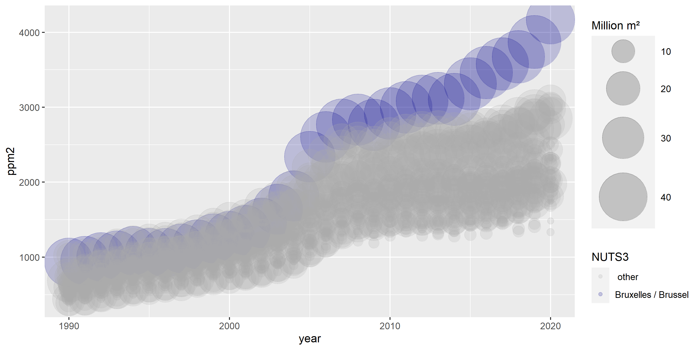
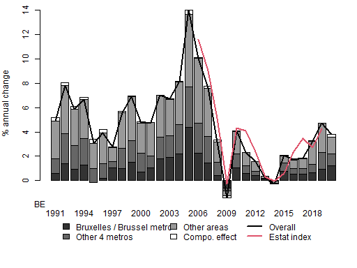
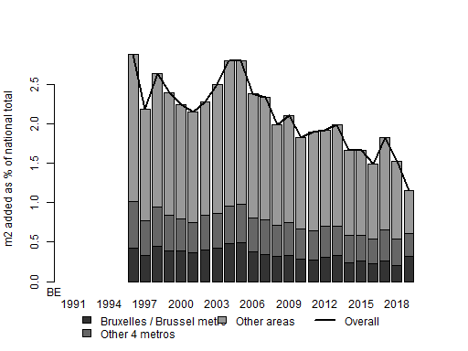
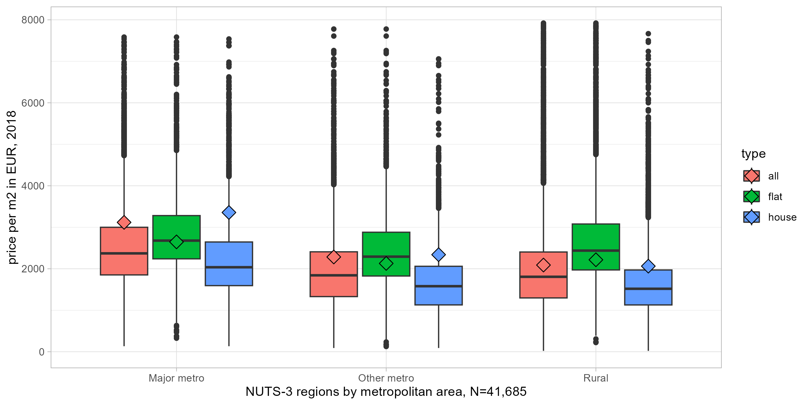

Metadata for BE
Available data
| Code | Start year | End year | NUTS-3 regions | Flat / houses | Latest value |
|---|---|---|---|---|---|
| bldgs | 1994 | 2019 | 44 | 1 | 4 573 k |
| bldgs_nres | 1994 | 2019 | 44 | 0 | 777 730 |
| dwellings | 1994 | 2019 | 44 | 1 | 5 577 k |
| dwellings_nres | 1994 | 2019 | 44 | 0 | 306 251 |
| dwl_primary | 2010 | 2010 | 44 | 1 | 4 563 k |
| gdp | 1990 | 2019 | 44 | 0 | 472 294 mn |
| hhincgross_pp | 1990 | 2019 | 44 | 0 | 24 193 |
| hhincnet_pp | 1990 | 2019 | 44 | 0 | 22 417 |
| m2perdwl | 1995 | 2019 | 44 | 1 | 97 |
| m2perperson | 1995 | 2019 | 44 | 0 | 47 |
| nbscrapes | 2019 | 2019 | 44 | 1 | 41 685 |
| p2inc | 1990 | 2019 | 44 | 1 | 10 |
| pop | 1990 | 2021 | 44 | 0 | 11 604 k |
| pop2dwl | 1994 | 2019 | 44 | 0 | 21 |
| ppm2 | 1990 | 2020 | 44 | 1 | 2 549 |
| rooms | 2010 | 2010 | 44 | 0 | 25 512 k |
| totalm2 | 1995 | 2019 | 44 | 1 | 540 008 k |
| totalval | 1990 | 2020 | 44 | 1 | 1 326 bn |
Start and end year denote time range for which NUTS-3 data is available. NUTS-e3 regions denotes the number of NUTS-3 regions for which data is available. flats/houses: If indicator = 1 then this data is avaialable for the subset of apartments and houses. Latest value: shows the last available data for the national aggregate.
Results overview
Prices over time

Each bubble denotes a NUTS-3 region. Blue colour indicates the capital NUTS-3 region.
Contribution to overall price evolution

Each bar denotes the contribution from a specific group of regions to annual house price growth for the national aggregate, weighted by their residential square metres from the previous year.Capital/top metros denotes any NUTS-3 regions of which more than half belongs to the largest metropolitan areas (that together cover more than 15 percent of the population). Other metros denotes the rest of NUTS-3 regions which belong to metropolitan areas. For reference, the red line indicates the annual change of the Eurostat house price index for existing dwellings.
Residential square metre growth, regional contribution

Each bar denotes the contribution from a specific group of regions to annual growth of residential useful square metres for the national aggregate.
Scraped prices per square metre, compared to stock-weighted average

Boxplots denote distribution of the offer price per m2 for scraped listings, within regions that belong to three types of metropolitan area. Box denote 25% and 75% quantiles, whiskers correpond to 1.5 the inter-quartile range. Diamonds indicate the headline (stock-weighted) average price for the same period, i.e. the price from the main database used in the bubble chart above.
Sources and definitions
Headline price data sources for BE
prices 2000-2017 are based on median transaction prices per type and muncipality from Belstat, divided by the average (arith mean) square metres for the type of dwelling in the respective municipality, and afterwards aggregated up to NUTS levels. Prices after 2017 are not complete for all municipalities. Therefore, price levels from 2017 are computed by the growth of the median price per dwelling per type for each NUTS-3 region.
Building stock data sources for BE
dwellings per type are taken directly from Belstat data on municipalities.
Definition of house v apartment for BE
apartment is any dwelling within a building that contains 3 or more dwellings (base level census data), or dwellings labelled as 'flat' by Belstat (for prices, stock time series). 'house' is any other dwelling, notably comprising single-family dwellings with 2, 3, or 4 facades.
Definition and data sources for square metres for BE
The last available square metre data is from the 2001 census, which provides size classes. Using microdata based average surfaces by size class, this provides average square metres per dwelling per municipality for 2001. This data is then iterated forward using the knwon number of dwellings by year, municipality, type, and construction year (from Belstat) and the surface area of completed dwellings by year, municipality, and type (also from Belstat), keeping account of the declining number of dwellings from earlier construction years. This forward iteration is consistent with number of rooms per type, dwelling and municipality from the 2011 census, as well as detailed survey data for Brussels (2004) and Flanders (Groot woononderzoek 2013).
Metadata per country:
BE BG CZ DK DE EE IE GR ES FR HR IT CY LV LT LU HU MT NL AT PL PT RO SI SK FI SE